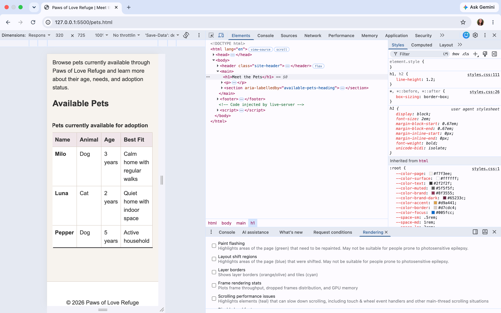

1. Project and URLs
- Project, audience, and purpose
- Paws of Love Refuge is a three-page adoption website for people who are considering adopting a pet from a local shelter. The site helps potential adopters learn about available pets, understand the adoption process, and begin an adoption request.
- Priority tasks
- Browse available pets, understand the adoption process, and submit an adoption request or schedule a visit.
- Pages
- Home, Meet the Pets, Adoption Request
- Repository
- https://github.com/adgerold-creator/Final_Capstone
- Published site
- https://adgerold-creator.github.io/Final_Capstone/
- Code defense
- [URL or live-defense statement]
2. Concise Requirement Map
| Requirement | Location | Purpose | Reuse decision |
|---|---|---|---|
| Semantic structure | All three pages | Use consistent landmarks, heading levels, and source order so each page is easy to understand and navigate. | Refactor |
| Shared design system | Shared styles.css | Use one reset, token system, typography system, spacing rules, and reusable component styles across the full site. | Refactor |
| Figure and caption | Home | Feature an adoptable pet with a meaningful image and caption that supports the shelter content. | Adapt |
| Accessible data table | Meet the Pets | Present useful adoption information such as available pets, ages, or adoption details in a structured format. | Adapt |
| Accessible form | Adoption Request | Allow a potential adopter to submit a request with clear labels, constraints, error guidance, and recovery. | Refactor |
| SVG | Meet the Pets or shared site branding | Add a purposeful original or substantially edited graphic that supports the shelter identity or content. | Adapt |
| Responsive navigation and layout | All three pages | Provide consistent navigation that works with keyboard, pointer, narrow screens, zoom, and JavaScript unavailable. | Refactor |
| Positioning and layering | Home | Support the featured content without blocking text, focus, or interaction. | Adapt |
| CSS shape or clipped treatment | Home | Add a small purposeful visual treatment to the featured area without reducing readability. | Adapt |
| Effect and motion | Shared action states and Home adoption information | Use subtle state feedback and a short purposeful effect while keeping a reduced-motion alternative. | Adapt |
| Testing and publication | Entire published site | Verify validation, links, keyboard access, zoom, responsive behavior, forms, reduced motion, JavaScript-off behavior, and two-browser support. | New |
| Sources, assets, and AI documentation | Capstone evidence PDF | Document technical sources, asset licensing, testing evidence, and permitted AI assistance. | New |
3. Focused Release Check
- HTML and CSS validation: Passed with revisions. Validation identified an ARIA issue in the table scroll container, which was corrected and successfully revalidated.
- Published links and assets: Passed. Navigation links, the featured dog image, and the shelter SVG loaded correctly from the published GitHub Pages site.
- 320 CSS pixels and 200% zoom: Passed after repairing the Meet the Pets table overflow at 320 CSS pixels. The site remained readable at 200% zoom.
- Keyboard and visible focus: Passed. Navigation links and form controls were reachable in a logical order and showed visible focus.
- Form labels, constraints, errors, and recovery: Passed. Required fields and invalid email input triggered native browser validation, and the errors cleared after correction.
- Reduced motion and JavaScript unavailable: Reduced-motion behavior remained usable. JavaScript-off testing was not completed for this checkpoint.
- Two current browsers: Passed in Chrome and Firefox.
4. Three Findings and Repairs
| Finding and condition | Impact | Repair | Exact retest and result |
|---|---|---|---|
| At 320 CSS pixels, the Meet the Pets table extended slightly beyond the available width and the cell padding felt crowded. | Users on narrow screens could experience clipped content or page-level horizontal scrolling. | I wrapped the table in a horizontally scrollable container and reduced the table cell padding at narrow widths. | I repeated the 320 CSS pixel test. The page no longer overflowed horizontally, the table stayed readable, and any horizontal scrolling remained inside the table container. |
HTML validation found that the table scroll container used aria-label on a
plain div without an appropriate semantic role. |
The markup was invalid, and the accessible name was not attached to a meaningful region. | I added role="region" to the scroll container and changed the accessible name
to aria-labelledby="available-pets-heading" so it uses the visible section
heading. |
I revalidated pets.html in the W3C validator after the change and confirmed
that the ARIA error was removed. |
| During form testing, submitting the Adoption Request form with required fields blank or an invalid email triggered the browser's validation messages. | The form prevented incomplete or incorrectly formatted information from being submitted and showed the user what needed attention. | No repair was needed because the native constraints and labels provided clear validation and recovery. | I corrected the missing and invalid fields and submitted again. The validation errors cleared as the entries met the required constraints. |
5. Screenshots

6. Sources, Assets, and AI
MDN/official sources: MDN: HTML table accessibility ; MDN: Client-side form validation ; MDN: clip-path ; MDN: @supports ; and the W3C HTML Validator . Accessed October 9, 2026.
Assets and licenses:
Featured adoption dog photograph by mexitographer, sourced from Adobe Stock and used under the Adobe
Stock license.
The file is saved as images/dog_adopt.jpeg and is displayed responsively on the Home page.
The shelter branding SVG was adapted from my earlier GIT 337 coursework and revised for the Paws of Love
Refuge capstone.
AI disclosure: I used ChatGPT during the capstone checkpoint to identify possible requirement gaps and suggest debugging hypotheses during testing. For example, AI suggested checking whether the narrow-screen table issue was caused by page-level overflow and whether the validator error was related to the ARIA markup on the table container. I made the final integration decisions and changes myself, including using an overflow container for the table and revising the table region markup after validation. I verified the results through my own 320 CSS pixel test, keyboard and form testing, and W3C validation before recording the findings in this report.